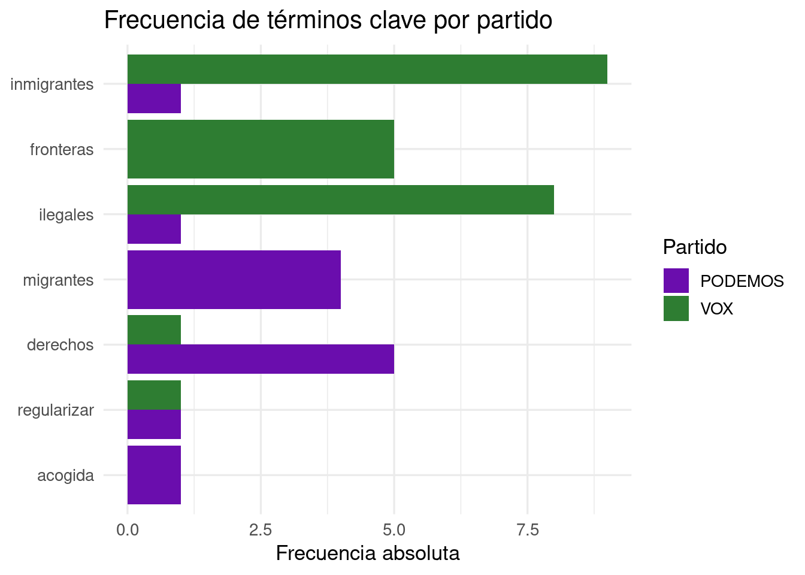

2 + 3[1] 510 / 4[1] 2.52 ^ 8[1] 256sqrt(144)[1] 12R es un lenguaje de programación estadístico diseñado específicamente para el análisis de datos, la estadística y la visualización. A diferencia de Excel, R es reproducible, extensible y gratuito. Los análisis se expresan como código: eso significa que cualquier colega puede replicar exactamente lo que has hecho.
En lingüística, R se usa para análisis de corpus, estadística de frecuencias, modelado de variación lingüística y visualización de patrones en el lenguaje.
Son dos cosas distintas pero complementarias:
La analogía habitual es que R es el motor del coche y RStudio es el salpicadero.
RStudio se organiza en cuatro paneles:
| Panel | Ubicación | Para qué sirve |
|---|---|---|
| Script | Arriba izquierda | Escribir y guardar el código |
| Console | Abajo izquierda | Ver resultados y ejecutar líneas sueltas |
| Environment | Arriba derecha | Ver los objetos creados en la sesión |
| Files / Plots / Packages | Abajo derecha | Gestionar archivos y ver gráficos |
2 + 3[1] 510 / 4[1] 2.52 ^ 8[1] 256sqrt(144)[1] 12sum(1, 2, 3, 4, 5)[1] 15mean(c(1, 2, 3, 4, 5))[1] 3mi_nombre <- "Ana García"
edad <- 23
aprobado <- TRUE
mi_nombre[1] "Ana García"edad + 10[1] 33x <- 3.14
class(x)[1] "numeric"palabra <- "lingüística"
class(palabra)[1] "character"es_sustantivo <- TRUE
class(es_sustantivo)[1] "logical"Ejercicio 1
autor con tu nombre completo entre comillas.anyo_nac con tu año de nacimiento y calcula tu edad: 2025 - anyo_nac.class() sobre cada objeto. ¿Qué tipo de dato devuelve cada uno?Un vector es una colección ordenada de elementos del mismo tipo. Es el bloque fundamental de R: casi todo en R es un vector. Se crean con la función c() (combine).
longitudes <- c(3, 5, 2, 8, 4, 6, 3, 7)
mean(longitudes)[1] 4.75median(longitudes)[1] 4.5max(longitudes)[1] 8length(longitudes)[1] 8palabras <- c("casa", "árbol", "luz", "universidad")
nchar(palabras)[1] 4 5 3 11Un data frame es una tabla: las filas son observaciones y las columnas son variables. Piensa en él como en la hoja de anotación de un corpus: cada fila es una unidad y cada columna es una propiedad anotada.
corpus_ejemplo <- data.frame(
palabra = c("casa", "árbol", "correr", "azul"),
categoria = c("sustantivo", "sustantivo", "verbo", "adjetivo"),
silabas = c(2, 2, 3, 2),
frecuencia = c(8420, 3105, 5622, 4890)
)
corpus_ejemplo palabra categoria silabas frecuencia
1 casa sustantivo 2 8420
2 árbol sustantivo 2 3105
3 correr verbo 3 5622
4 azul adjetivo 2 4890str(corpus_ejemplo)'data.frame': 4 obs. of 4 variables:
$ palabra : chr "casa" "árbol" "correr" "azul"
$ categoria : chr "sustantivo" "sustantivo" "verbo" "adjetivo"
$ silabas : num 2 2 3 2
$ frecuencia: num 8420 3105 5622 4890summary(corpus_ejemplo) palabra categoria silabas frecuencia
Length:4 Length:4 Min. :2.00 Min. :3105
Class :character Class :character 1st Qu.:2.00 1st Qu.:4444
Mode :character Mode :character Median :2.00 Median :5256
Mean :2.25 Mean :5509
3rd Qu.:2.25 3rd Qu.:6322
Max. :3.00 Max. :8420 nrow(corpus_ejemplo)[1] 4ncol(corpus_ejemplo)[1] 4corpus_ejemplo$palabra[1] "casa" "árbol" "correr" "azul" corpus_ejemplo$frecuencia[1] 8420 3105 5622 4890corpus_ejemplo[1, ] palabra categoria silabas frecuencia
1 casa sustantivo 2 8420corpus_ejemplo[, 2][1] "sustantivo" "sustantivo" "verbo" "adjetivo" corpus_ejemplo[2, 3][1] 2corpus_ejemplo[corpus_ejemplo$silabas == 2, ] palabra categoria silabas frecuencia
1 casa sustantivo 2 8420
2 árbol sustantivo 2 3105
4 azul adjetivo 2 4890corpus_ejemplo[corpus_ejemplo$frecuencia > 5000, ] palabra categoria silabas frecuencia
1 casa sustantivo 2 8420
3 correr verbo 3 5622corpus_ejemplo[corpus_ejemplo$categoria == "sustantivo", ] palabra categoria silabas frecuencia
1 casa sustantivo 2 8420
2 árbol sustantivo 2 3105Ejercicio 2
Crea un data frame llamado mi_corpus con al menos 5 palabras de tu elección y las columnas palabra, categoria y longitud.
str(mi_corpus) para inspeccionar la estructura. ¿Qué tipo tiene cada columna?$ y calcula la media.A partir de aquí trabajamos con un corpus real de transcripciones de discursos políticos sobre inmigración en España. Los textos están anonimizados por partido y alojados en GitHub. El código es completamente reproducible: cualquier estudiante puede ejecutarlo y obtener los mismos resultados.
library(dplyr)
library(readr)
library(stringr)
library(purrr)
library(ggplot2)
base_url <- "https://raw.githubusercontent.com/AritzUMA/runav/main/discursos/"
archivos <- c(
"VOX_1.txt", "VOX_2.txt", "VOX_3.txt", "VOX_4.txt",
"VOX_5.txt", "VOX_6.txt", "VOX_7.txt",
"PODEMOS_1.txt", "PODEMOS_2.txt", "PODEMOS_3.txt",
"PODEMOS_4.txt", "PODEMOS_5.txt"
)
leer_discurso <- function(archivo) {
url <- paste0(base_url, archivo)
texto <- read_lines(url) |> paste(collapse = " ")
partido <- str_extract(archivo, "^[A-Z]+")
id <- str_remove(archivo, "\\.txt$")
tibble(
id = id,
partido = partido,
texto = texto,
n_palabras = str_count(texto, "\\S+"),
n_chars = nchar(texto),
long_media_palabra = round(nchar(texto) / str_count(texto, "\\S+"), 2)
)
}
corpus <- map(archivos, leer_discurso) |> list_rbind()
glimpse(corpus)Rows: 12
Columns: 6
$ id <chr> "VOX_1", "VOX_2", "VOX_3", "VOX_4", "VOX_5", "VOX_6…
$ partido <chr> "VOX", "VOX", "VOX", "VOX", "VOX", "VOX", "VOX", "P…
$ texto <chr> "Este lado está con nosotros, Rosío Bonasterio, ana…
$ n_palabras <int> 1823, 228, 176, 423, 475, 153, 300, 13350, 112, 179…
$ n_chars <int> 10474, 1383, 1047, 2540, 2733, 878, 1690, 75955, 67…
$ long_media_palabra <dbl> 5.75, 6.07, 5.95, 6.00, 5.75, 5.74, 5.63, 5.69, 5.9…install.packages(c("dplyr", "ggplot2", "readr", "stringr", "purrr", "tidytext"))corpus |> select(id, partido, n_palabras, n_chars, long_media_palabra)# A tibble: 12 × 5
id partido n_palabras n_chars long_media_palabra
<chr> <chr> <int> <int> <dbl>
1 VOX_1 VOX 1823 10474 5.75
2 VOX_2 VOX 228 1383 6.07
3 VOX_3 VOX 176 1047 5.95
4 VOX_4 VOX 423 2540 6
5 VOX_5 VOX 475 2733 5.75
6 VOX_6 VOX 153 878 5.74
7 VOX_7 VOX 300 1690 5.63
8 PODEMOS_1 PODEMOS 13350 75955 5.69
9 PODEMOS_2 PODEMOS 112 670 5.98
10 PODEMOS_3 PODEMOS 179 1019 5.69
11 PODEMOS_4 PODEMOS 361 1943 5.38
12 PODEMOS_5 PODEMOS 229 1340 5.85summary(corpus |> select(n_palabras, n_chars, long_media_palabra)) n_palabras n_chars long_media_palabra
Min. : 112.0 Min. : 670 Min. :5.380
1st Qu.: 178.2 1st Qu.: 1040 1st Qu.:5.690
Median : 264.5 Median : 1536 Median :5.750
Mean : 1484.1 Mean : 8473 Mean :5.790
3rd Qu.: 436.0 3rd Qu.: 2588 3rd Qu.:5.957
Max. :13350.0 Max. :75955 Max. :6.070 dplyr ofrece verbos intuitivos para transformar datos. El operador |> (pipe) encadena operaciones de izquierda a derecha.
# select(): seleccionar columnas
corpus |> select(id, partido, n_palabras)# A tibble: 12 × 3
id partido n_palabras
<chr> <chr> <int>
1 VOX_1 VOX 1823
2 VOX_2 VOX 228
3 VOX_3 VOX 176
4 VOX_4 VOX 423
5 VOX_5 VOX 475
6 VOX_6 VOX 153
7 VOX_7 VOX 300
8 PODEMOS_1 PODEMOS 13350
9 PODEMOS_2 PODEMOS 112
10 PODEMOS_3 PODEMOS 179
11 PODEMOS_4 PODEMOS 361
12 PODEMOS_5 PODEMOS 229# filter(): filtrar por partido
corpus |> filter(partido == "VOX")# A tibble: 7 × 6
id partido texto n_palabras n_chars long_media_palabra
<chr> <chr> <chr> <int> <int> <dbl>
1 VOX_1 VOX Este lado está con nosotr… 1823 10474 5.75
2 VOX_2 VOX Perdón, esos extranjeros … 228 1383 6.07
3 VOX_3 VOX Estos más de 300 inmigran… 176 1047 5.95
4 VOX_4 VOX Señor Sánchez, ¿qué piens… 423 2540 6
5 VOX_5 VOX Señor Sánchez, ¿por qué s… 475 2733 5.75
6 VOX_6 VOX Lo que les ha ocurrido aq… 153 878 5.74
7 VOX_7 VOX ser que han cambiado uste… 300 1690 5.63# mutate(): crear nuevas variables
corpus |>
mutate(n_palabras_k = round(n_palabras / 1000, 2)) |>
select(id, partido, n_palabras, n_palabras_k)# A tibble: 12 × 4
id partido n_palabras n_palabras_k
<chr> <chr> <int> <dbl>
1 VOX_1 VOX 1823 1.82
2 VOX_2 VOX 228 0.23
3 VOX_3 VOX 176 0.18
4 VOX_4 VOX 423 0.42
5 VOX_5 VOX 475 0.48
6 VOX_6 VOX 153 0.15
7 VOX_7 VOX 300 0.3
8 PODEMOS_1 PODEMOS 13350 13.4
9 PODEMOS_2 PODEMOS 112 0.11
10 PODEMOS_3 PODEMOS 179 0.18
11 PODEMOS_4 PODEMOS 361 0.36
12 PODEMOS_5 PODEMOS 229 0.23# Pipeline completo: discursos ordenados por longitud
corpus |>
select(id, partido, n_palabras, long_media_palabra) |>
arrange(desc(n_palabras))# A tibble: 12 × 4
id partido n_palabras long_media_palabra
<chr> <chr> <int> <dbl>
1 PODEMOS_1 PODEMOS 13350 5.69
2 VOX_1 VOX 1823 5.75
3 VOX_5 VOX 475 5.75
4 VOX_4 VOX 423 6
5 PODEMOS_4 PODEMOS 361 5.38
6 VOX_7 VOX 300 5.63
7 PODEMOS_5 PODEMOS 229 5.85
8 VOX_2 VOX 228 6.07
9 PODEMOS_3 PODEMOS 179 5.69
10 VOX_3 VOX 176 5.95
11 VOX_6 VOX 153 5.74
12 PODEMOS_2 PODEMOS 112 5.98# Resumen global
corpus |>
summarise(
media_palabras = round(mean(n_palabras), 0),
mediana_palabras = median(n_palabras),
total_discursos = n()
)# A tibble: 1 × 3
media_palabras mediana_palabras total_discursos
<dbl> <dbl> <int>
1 1484 264. 12# Agrupado por partido
corpus |>
group_by(partido) |>
summarise(
n_discursos = n(),
media_palabras = round(mean(n_palabras), 0),
mediana_palabras = median(n_palabras),
long_media_palabra = round(mean(long_media_palabra), 2)
) |>
arrange(desc(media_palabras))# A tibble: 2 × 5
partido n_discursos media_palabras mediana_palabras long_media_palabra
<chr> <int> <dbl> <int> <dbl>
1 PODEMOS 5 2846 229 5.72
2 VOX 7 511 300 5.84# Histograma de longitud por partido
ggplot(corpus, aes(x = n_palabras, fill = partido)) +
geom_histogram(bins = 12, color = "white", alpha = 0.8) +
scale_fill_manual(values = c("PODEMOS" = "#6a0dad", "VOX" = "#2e7d32")) +
labs(
title = "Distribución de longitud de los discursos",
x = "Número de palabras",
y = "Frecuencia",
fill = "Partido"
) +
theme_minimal()
# Longitud media por partido
corpus |>
group_by(partido) |>
summarise(media = mean(n_palabras)) |>
ggplot(aes(x = reorder(partido, media), y = media, fill = partido)) +
geom_col(width = 0.5) +
scale_fill_manual(values = c("PODEMOS" = "#6a0dad", "VOX" = "#2e7d32")) +
labs(
title = "Longitud media de discursos por partido",
x = NULL,
y = "Palabras (media)"
) +
theme_minimal() +
theme(legend.position = "none")
Ejercicio 3
Usando el corpus real:
group_by() y summarise().densidad = n_palabras / n_chars. ¿Qué mide esta variable lingüísticamente?long_media_palabra separado por partido. ¿Qué partido usa palabras más largas?corpus |>
group_by(partido) |>
summarise(
n_discursos = n(),
total_palabras = sum(n_palabras),
media_palabras = round(mean(n_palabras), 0),
sd_palabras = round(sd(n_palabras), 0),
long_media_palabra = round(mean(long_media_palabra), 2),
.groups = "drop"
)# A tibble: 2 × 6
partido n_discursos total_palabras media_palabras sd_palabras
<chr> <int> <int> <dbl> <dbl>
1 PODEMOS 5 14231 2846 5873
2 VOX 7 3578 511 591
# ℹ 1 more variable: long_media_palabra <dbl>Comparamos la longitud media de palabra como indicador de complejidad léxica: palabras más largas suelen asociarse a un registro más formal o técnico.
corpus |>
select(id, partido, n_palabras, long_media_palabra) |>
arrange(desc(long_media_palabra))# A tibble: 12 × 4
id partido n_palabras long_media_palabra
<chr> <chr> <int> <dbl>
1 VOX_2 VOX 228 6.07
2 VOX_4 VOX 423 6
3 PODEMOS_2 PODEMOS 112 5.98
4 VOX_3 VOX 176 5.95
5 PODEMOS_5 PODEMOS 229 5.85
6 VOX_1 VOX 1823 5.75
7 VOX_5 VOX 475 5.75
8 VOX_6 VOX 153 5.74
9 PODEMOS_1 PODEMOS 13350 5.69
10 PODEMOS_3 PODEMOS 179 5.69
11 VOX_7 VOX 300 5.63
12 PODEMOS_4 PODEMOS 361 5.38ggplot(corpus, aes(x = partido, y = n_palabras, fill = partido)) +
geom_boxplot(alpha = 0.7) +
geom_jitter(width = 0.15, size = 2.5, alpha = 0.7) +
scale_fill_manual(values = c("PODEMOS" = "#6a0dad", "VOX" = "#2e7d32")) +
labs(
title = "Longitud de los discursos por partido",
subtitle = "Cada punto es un discurso",
x = NULL,
y = "Número de palabras"
) +
theme_minimal(base_size = 13) +
theme(legend.position = "none")
# Complejidad léxica
ggplot(corpus, aes(x = partido, y = long_media_palabra, fill = partido)) +
geom_boxplot(alpha = 0.7) +
geom_jitter(width = 0.15, size = 2.5, alpha = 0.7) +
scale_fill_manual(values = c("PODEMOS" = "#6a0dad", "VOX" = "#2e7d32")) +
labs(
title = "Complejidad léxica por partido",
subtitle = "Longitud media de palabra (caracteres / palabras)",
x = NULL,
y = "Longitud media de palabra"
) +
theme_minimal(base_size = 13) +
theme(legend.position = "none")
# Relación entre longitud del discurso y complejidad léxica
ggplot(corpus, aes(x = n_palabras, y = long_media_palabra, color = partido)) +
geom_point(size = 3, alpha = 0.8) +
geom_smooth(method = "lm", se = FALSE, linewidth = 0.8) +
scale_color_manual(values = c("PODEMOS" = "#6a0dad", "VOX" = "#2e7d32")) +
labs(
title = "Longitud vs. complejidad léxica",
x = "Número de palabras",
y = "Longitud media de palabra",
color = "Partido"
) +
theme_minimal(base_size = 13)
Ejercicio 4
sd() dentro de summarise().n_palabras y long_media_palabra? Usa cor(corpus$n_palabras, corpus$long_media_palabra).n_palabras en X y long_media_palabra en Y, coloreado por partido. ¿Ves algún patrón diferencial entre partidos?library(tidytext)
tokens <- corpus |>
select(id, partido, texto) |>
unnest_tokens(palabra, texto)
tokens |> count(partido)# A tibble: 2 × 2
partido n
<chr> <int>
1 PODEMOS 14240
2 VOX 3579tokens |>
count(partido, palabra, sort = TRUE) |>
group_by(partido) |>
slice_max(n, n = 15) |>
ggplot(aes(x = reorder(palabra, n), y = n, fill = partido)) +
geom_col(show.legend = FALSE) +
facet_wrap(~partido, scales = "free_y") +
scale_fill_manual(values = c("PODEMOS" = "#6a0dad", "VOX" = "#2e7d32")) +
coord_flip() +
labs(
title = "15 palabras más frecuentes por partido",
x = NULL,
y = "Frecuencia"
) +
theme_minimal()
terminos_clave <- c("migrantes", "inmigrantes", "ilegales", "regularizar",
"fronteras", "expulsión", "acogida", "derechos")
tokens |>
filter(palabra %in% terminos_clave) |>
count(partido, palabra) |>
ggplot(aes(x = reorder(palabra, n), y = n, fill = partido)) +
geom_col(position = "dodge") +
scale_fill_manual(values = c("PODEMOS" = "#6a0dad", "VOX" = "#2e7d32")) +
coord_flip() +
labs(
title = "Frecuencia de términos clave por partido",
x = NULL,
y = "Frecuencia absoluta",
fill = "Partido"
) +
theme_minimal(base_size = 13)
Ejercicio 5 — Análisis libre
Elige una de estas preguntas y produce un gráfico que la responda:
terminos_clave que te parezcan relevantes. ¿Cambia el patrón entre partidos?Para cada análisis: añade título, etiquetas de ejes y escribe dos frases interpretando el resultado desde una perspectiva lingüística.
| Recurso | Descripción |
|---|---|
| R for Data Science | Manual de referencia, gratuito online |
| Text Mining with R | Análisis de texto con tidytext |
quanteda |
Lingüística de corpus en R |
udpipe |
Anotación morfosintáctica multilingüe |
| Posit Community | Foro oficial de la comunidad R |
Una vez superado el nivel introductorio, puedes explorar otros entornos:
| IDE | Descripción | Ideal para |
|---|---|---|
| RStudio | El estándar para R. Gratuito y completo | Quien trabaja solo con R |
| Positron | Sucesor de RStudio, también de Posit. Aún en beta | R + Python en el mismo entorno |
| VS Code | Editor generalista muy popular. Requiere extensión R | Perfiles más técnicos |
| Jupyter | Notebooks interactivos. Muy usado en ciencia de datos | Análisis exploratorio y docencia |
| Neovim/Emacs | Editores avanzados para usuarios expertos | Perfiles con experiencia en terminal |